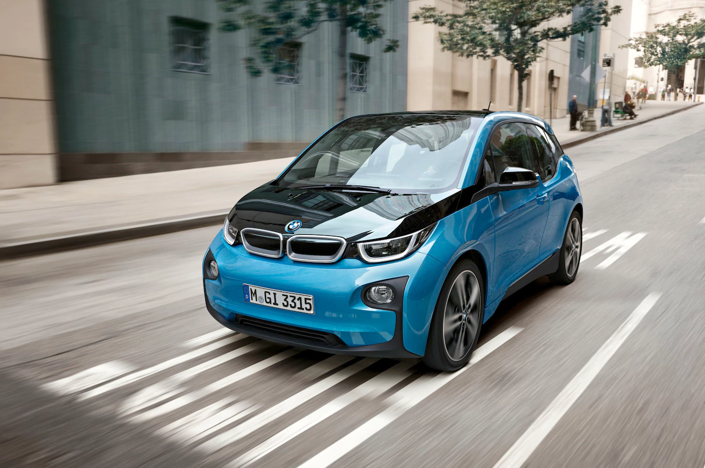

BMW i3 є частиною «Проекту i», для реалізації якого створений новий бренд BMW i. BMW i3 запустили в масове виробництво в 2013 році з поставками на декількох ринках світу починаючи з листопада 2013 року. Концепт-кар i3 був представлений в 2011 році на Франкфуртському автосалоні. Прототип BMW i3 продемонстрований спеціалістами BMW під час літніх Олімпійських іграх 2012 року в Лондоні. Серійну версію було представлено в кінці червня 2013 року одночасно в трьох містах — Нью-Йорку, Лондоні і Пекіні.
i3 комплектується електродвигуном потужністю 168 к.с. і крутним моментом 250 Нм, який передає крутний момент через редуктор на задні колеса. Максимальна швидкість автомобіля обмежена 150 км/год, від 0 до 100 км/год автомобіль розганяється за 7,2 секунди (7,9 у версії i3 RangeExtender). Середня витрата енергії в циклі руху складає 12,9 кВтгод на 100 км. Середня витрата палива у версії i3 RangeExtender на 100 км пробігу складає 0,6 літра. Автомобіль здатний проїхати приблизно від 130 до 160 км, з системою «Eco Pro+» — більше 250 км. (у такому режимі авто вимикає систему кондиціонування і обмежує максимальну швидкість на позначці 90 км/год.). У версії i3 RangeExtender присутній 2-ох циліндровий, 650 кубовий двигун потужністю 34 к.с., котрий заряджає батареї, тим самим збільшуючи запас ходу в 300—340 км пробігу.
Пасажирська капсула автомобіля виготовлена з вуглепластикового композиту CFRP (що унікально для масової моделі), а в конструкції використані легкі магнієві сплави. Зовнішні панелі виготовлені з пластику.
Спереду електрокар їздить на стійках Макферсон, а ззаду працює п'ятиважільна підвіска, змонтована прямо на силовому модулі.
i3 став першим серійним автомобілем BMW з нульовим рівнем викидів з електричною трансмісією. Ціна на європейському ринку починається з € 34 950 ($ 46 400).
Компанія BMW пропонує 4 варіанта оформлення салону — Atelier, Loft, Lodge і Suite.
Розмір колісних дисків — 155/70 R19.
Багажник об'ємом в 260 літрів можна збільшити склавши задні сидіння і при цьому отримати 1100 літрів.
Комплектації BMW i3 - «Mega», «Giga» і «Tera». Базова модель Mega постачається з навігаційною системою, світлодіодними фарами, 19-дюймовими колесами, системою «Comfort Access», швидким портом зарядки DC, підігрівом сидінь, обшивкою зі штучної шкіри. Модель Giga має шкіряну обшивку та акценти з дерева. Топова модель Tera має повністю шкіряну обшивку та 19-дюймові легкосплавні диски на колесах.
Автомобіль вже «в базі» підключається до сервісу BMW ConnectedDrive, що припускає в даному випадку масу можливостей по передачі інформації між автомобілем, водієм і рештою світу. Власник електромобіля може не тільки дистанційно перевіряти параметри стану машини або стежити за процесом зарядки. Наприклад, за допомогою смартфона людина може прокладати свій шлях пішки від машини на стоянці до фінальної точки призначення або від якогось стартового пункту назад, до запарковаться електрокару. Також навігація комплексу підкаже розташування публічних зарядних станцій, вибере найбільш оптимальний з точки зору витрати електрики маршрут подорожі або при недостатності запасу ходу нагадає водієві про необхідність включення режиму граничної економії енергії ECO PRO + (саме в ньому на одному акумуляторі можна протягнути 200 км).
Серед запропонованих опцій аудіосистема «Harman/Kardon» на 12 динаміків і навігаційну систему з інформуванням про дорожній рух у режимі реального часу. Опціями також стали люк даху з електроприводом, система попередження про можливе зіткнення, виявлення пішоходів, автоматична система паркування та система попередження і зменшення наслідків зіткнення, яка самостійно активує гальма в разі аварії.
Влітку 2016 року з'явилася версія з батареєю на 33 кВт • год (ємність колишньою - 22 кВт • год, вона також доступна для замовлення). Нова модифікація на 900 євро дорожче. Розміри акумулятора залишилися колишніми, при цьому запас ходу збільшився більш ніж на 50% відповідно до стандартного циклу NEDC і тепер становить не 190 км, а 300 км. У реальних умовах експлуатації - близько 200 км. Модифікація Range Extender з 650-кубовим бензиновим мотором тепер також доступна з двома видами батарей. Сукупний запас ходу гібрида зі збільшеним бензобаком - приблизно 350 км.